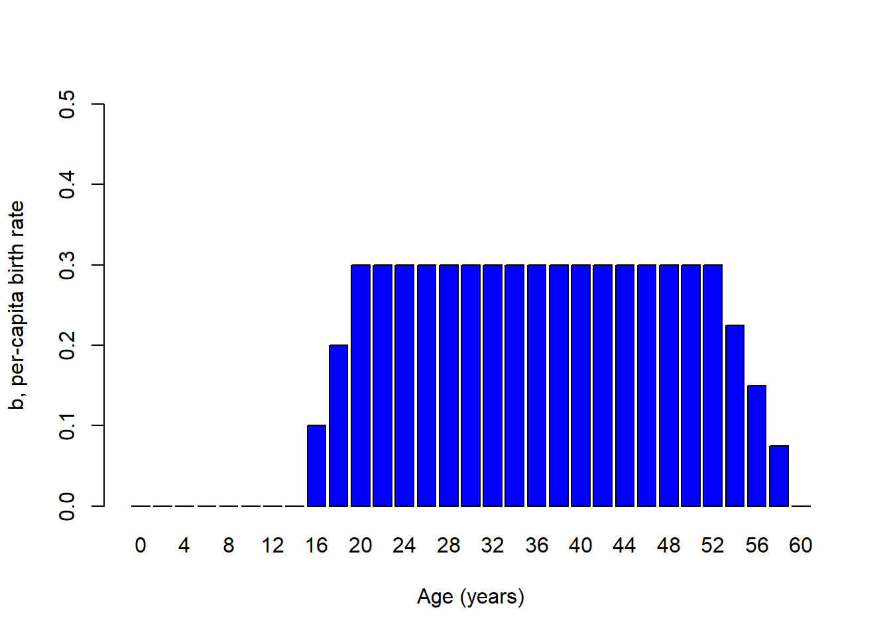

Age-structured populations
NRES 470/670
Spring 2020
When \(d\) and \(b\) depend on more than just density…

Take this Indian elephant for example. How does reproductive rate depend on age in this case?
We might imagine it looks something like this!
Elephant_age <- seq(0,60,by=2)
Birth_rate <- c(rep(0,times=7),seq(0,0.3,length=4),rep(0.3,times=15),seq(0.3,0,length=5))
names(Birth_rate) <- Elephant_age
barplot(Birth_rate,xlab="Age",ylab="b, per-capita birth rate",col="blue",ylim=c(0,0.5))

What about per-capita death rates for a tortoise? We might imagine something that looks like this…
Tortoise_age <- seq(0,120,by=5)
Death_rate <- c(seq(0.7,0.05,length=5),seq(0.02,0.02,length=16),seq(0.02,0.5,length=4))
names(Death_rate) <- Tortoise_age
barplot(Death_rate,xlab="Age",ylab="d, per-capita death rate",col="blue")
So, for many species per-capita birth rate and death rate are fundamentally dependent on age!

Q: Imagine you were trying to re-establish a population of spadefoot toads. You take 1000 tadpoles from a captive population and place them in a temporary wetland right after a rainstorm. What would population growth look like over the next few years, assuming the reintroduction strategy was successful? [tophat]
Aside: sex-structured vital rates
Q: Can you think of some real-world examples where vital rates might differ between males and females? [tophat]
Q: Is sex structure important to consider when modeling populations? Why or why not?

Q: Imagine a population of 100 golden-headed lion tamarins (Leontopithecus chrysomelas) that consists of all adult males and post-reproductive females. What is the conservation status of this population?
Life table!
Age-structured populations are often represented by a table called a life table. A life table typically represents a single cohort (group of organisms of the same species that are born during the same year) that is tracked across time. Here’s an example:
| x | S(x) | b(x) | l(x) | g(x) |
|---|---|---|---|---|
| 0 | 500 | 0 | 1.0 | 0.80 |
| 1 | 400 | 2 | 0.8 | 0.50 |
| 2 | 200 | 3 | 0.4 | 0.25 |
| 3 | 50 | 1 | 0.1 | 0.00 |
| 4 | 0 | 0 | 0.0 | NA |
Fecundity schedule
The fecundity component of the life table is called the “fedundity schedule”! The term \(b(x)\) represents the per-capita birth rate for females of age x.
Survivorship schedule
Fecundity is only half the story! The survival component of the life table is called the “survivorship schedule”!
The term cohort represents a bunch of individuals that were all born at the same time. In the life table, the term S(x) refers to the number of individuals from a particular cohort that are still alive at age x. From this raw data, we compute two terms, called survivorship and survival rate
The term \(l(x)\) represents the proportion of the cohort surviving from age 0 to age x. This is called survivorship
The term \(g(x)\) represents the proportion surviving from age x to age x+1. This is called survival rate
Types of survivorship curveys…
There are three main types of survivorship curves (also called survivorship schedules), classified as Type I, Type II, and Type III.
Survivorship curves describe how the logarithm of survivorship (\(log(l(x))\)) drops off with age. These three types of life history pattern can be illustrated with three real-world examples: humans, songbirds, and frogs.
Q: can survivorship increase with age?
Q: why do we use the logarithm of survivorship in order to characterize survivorship curves?
Type I

Type II

Type III


(Note the logarithmic scale on the Y axis!)
Q: Which survivorship curve is the most common in nature?? [tophat]
In-class exercise: age-structured population growth
In this exercise we will explore some facets of age-stuctured populations.
- Load up the life table from earlier in this lecture, by clicking here. Use this table to compute the net reproductive rate, \(R_0\). This represents the mean (expected) number of female offspring produced per female over her entire lifetime. This is also known as lifetime reproductive potential! This can be computed as:
\(R_0 = \sum_{x=0}^k l(x)\cdot b(x)\)
Where \(k\) is the maximum age.
Q: Can you implement this formula in Excel? What’s the answer?
- If the net reproductive rate, \(R_0\) is positive, then the population is above the replacement rate of 1, and therefore the population will grow. If \(R_0\) is negative, then the population will decline. This sounds familiar, right? Just like the finite rate of growth, \(\lambda\).
BUT, what is the time frame of \(R_0\)? What is the timeframe of \(\lambda\)? They are different right? The difference is that \(R_0\) describes growth per generation!.
What is a generation? The most common definition (for generation time) is the Average age of the parents of all the offspring produced by a single cohort. This can be computed from the life table as:
\(G = \frac{\sum_{x=0}^{k}l(x)\cdot b(x)\cdot x}{\sum_{x=0}^{k}l(x)\cdot b(x)}\)
See if you can implement this in Excel (or whatever spreadsheet software you use!).
Q: What is the generation time of the population in the table?
- Now, can you compute the intrinsic rate of growth (\(r\)) for this age-structured population?
To a first-order approximation, you can use this equation:
\(r = \frac{ln(R_0)}{G}\)
Just looking at this equation, you see that organisms with longer generation times (\(G\)) have slower intrinsic rates of growth, all else being equal.
Q: Implement this equation in Excel. Is this an exponentially growing population?
Load up an age-structured model in InsightMaker. You can clone this one, here.
4a. Initialize the population like the spadefoot toad example from above- with only the first (juvenile) age class. What population dynamics occur at the beginning of the simulation? What about the end of the simulation?
4b. Can you tweak the initial abundance of juveniles, subadults and adults so that the population exhibits smooth exponential growth for all three age classes (and the population as a whole)? This is called Stable Age Distribution (S.A.D.)
4c. Now change the vital rates (Juv mort rate, Sub mort rate, Transition rate to Subadult, etc.). Is population growth still smooth? If not, can you find the NEW Stable Age Distribution??
4d. Return to the initial model (this one, here). Now change the Adult mort rate to 0.65. What happens? Is this a growing population?
Q: (using the model from step 4d, with adult mortality set at 0.65) How many subadults would need to be added to the population each year (population supplementation) to maintain a stable or growing population of >20 adults? [tophat]
Q: Is supplementation the best strategy for conserving this population?